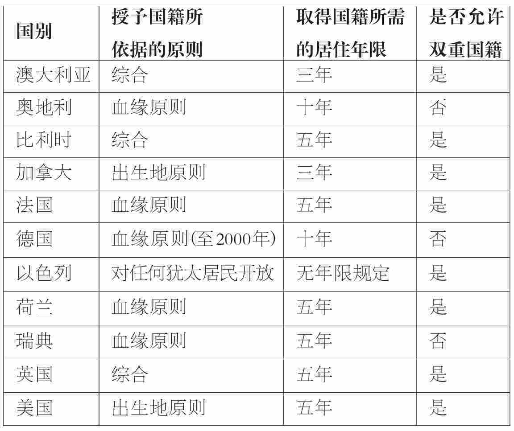

“何为移民？”这一问题的答案看似一清二楚：大多数国家采用联合国的定义，认为凡旅居国外至少一年的人就算移民。但实际上问题并没有这么简单。首先，“移民”这一概念将种种境况中形形色色的人都包罗其中。其次，要真正统计移民数量，确定他们在国外的时间也相当困难。再次，确定移民身份何时终止与确定移民身份何时获得同样重要。终止移民身份的方式一是重返故土，二是成为新国家的公民，而限定这种身份转变的程序则千差万别。最后，有人提出，由于全球化的影响，如今出现了具有新特点的“新型”移民，他们有时被称为跨国社区人员或流散人口。
移民的分类
移民的分类通常有三种方式。首先，常见的方式是区分“自愿”和“被迫”移民。后者指由于冲突、迫害，以及诸如干旱或饥荒等环境的原因，而被迫离开本国迁往他国的人。这些人通常被称为难民，尽管我们会在第六章看到，难民一词其实有其特定的含义，并不包括所有的被迫移民。据联合国难民事务高级专员公署的统计，全世界大约有九百万难民。如在第一章开篇之初我们知道，当今世界自愿离开祖国的移民要多得多——约一亿九千万人。
第二种相关的常用方式是区分出于政治原因和出于经济原因而迁移的人。前者通常指难民——他们由于政治迫害或冲突而被迫离开祖国。后者通常被称为劳动力移民，即为了找到工作，或寻求更好的工作机会和工作条件而迁移的人。这些人被进一步分为低技术移民和高技术移民。还有一些人介于经济移民和政治移民之间，他们之所以迁移主要是出于社会原因。这些人大多数是带着孩子的妇女，以家庭团聚的方式移民海外与在外工作的丈夫团聚。同时，值得一再说明的是，如今出于经济原因，独立移民的女性比例正不断增加。
最后一种方式是区分合法移民和“非法”移民——在第五章我们会了解，“非常规”一词可能更加准确，用来指移民时可能不像“非法”这个词那样带有贬义。“非常规”移民的概念包含的范围广泛，主要包括无证明文件或持伪造文件入境他国的人，或合法进入他国但在签证或工作许可证过期后仍然逗留的移民。下文将会说明，要精确计算全球非常规移民的数量或许不太可能，但可以确定的是，合法移民远远多于非常规移民。
高技术移民
分类总是把事实简单化，上述移民分类至少在三个方面也是如此。第一，不同类别间有相互重合之处。这样一来，多数自愿移民同样也是经济移民，而许多被迫移民则同时也是政治移民或难民。
第二，各类移民间的显著区别在现实中常常比较模糊。比如，完全自愿或不自愿的移民少之又少。在很多大公司看来，让员工在世界各地来回调动不过是培训的一部分。因此，员工在公司内部调动，比如说在IBM公司从纽约调到东京，看似自愿，实际上则是为了保住这份工作而别无选择。对被迫移民来说，即便是难民，除了离开祖国也并非就别无选择。比如他们可以冒险留下来尽量避免被卷入冲突，可以在国内迁移，搬到临近的村庄或城镇，也可以在冲突中支持某方，得到保护。
经济移民和政治移民之间的差异同样比较模糊。想想人们因失业而离开本国的情况，表面看来，他们是出于经济原因而移民他国，但如果他们之所以失业是由于种族、宗教或性别方面的原因，我们又当如何看待呢？在这种情况下，他们又会被看作是出于政治原因而远走他乡。在此，区分移民的深层原因和移民的直接原因是分析问题时所面临的一大难题。
第三，相关的一点是，在各种类别之间，人们完全可以从一类移民“转变”为另一类移民。合法移民如在工作许可证到期后仍然滞留，便会被归入非常规移民。2005年，据官方估计，仅澳大利亚就有五万签证过期的留居者。还有一种情况是，移民在离开祖国时出于自愿，但之后由于战争的爆发或政府的更替而无法回国，这样一来，他实际上就成为了非自愿移民，迫不得已只能待在国外。
统计数字意味着什么
“何为移民”这个问题之所以如此难以回答的另外一个原因是，清点移民实在不易。且让我们费些篇章，以英国的情况为例来说明这一点。
关于英国移民的统计数字需要给出三种评述。首先，即使是官方的移民统计数据也无法全景呈现英国的国际移民的状况。说白了，即使是政府也没多少把握去声明每年有多少人进入或离开本国。最显而易见的原因就是，官方统计数据未能包括非常规移民。英国非常规移民的统计数据简直就是靠猜测得来的。第五章将详细讨论非常规移民的统计问题。
第二，政府真正记录下来的移民统计数据很值得怀疑。大多数公布于众的进出英国的移民统计数据都是以国际旅客调查（IPS）为依据的。这只是一个在海上和机场进行的、人数约两千二百人的小型抽样调查。旅客们会就逗留英国的意图（如果是离境则需说明待在国外的意图）接受采访。已经在国外或英国居住至少一年、有意留居英国或离开英国至少一年的都被算作移民。问题之一就是覆盖面：接受了采访的只是极小一部分人而结果却被放大了。另外一个问题是，人们的想法常常是会变的，他们是去是留，待上多久都说不准。IPS的数字需要调整，以尽可能考虑到这些问题。
英国有关移民流动的数据有两个来源。由颁发的工作许可证可以估计入境工作者的数量，但这只对欧洲经济区（EEA）之外的劳动力有效，因为EEA成员国的公民无须工作许可证即可入境工作。寻求庇护者的统计数据显示的是在英国申请庇护者的数量，但在解读时需要特别注意，因为靠寻求庇护者照顾的家人（配偶和子女）有时算入总数有时又不算。要计算入境英国的移民人数，可供选择的指标还有劳动力调查，该项调查记录的是一年前的国籍情况和住址，但也是仅就某些家庭所做的抽样调查。全国性的人口普查也记录一年前的住址但并不记录国籍情况（只记录出生国），而且每十年才进行一次。
最后一条评述是，移民统计数据呈现的方式不同，其传达的信息也会不同，当然，任何统计都是如此。2002年入境英国的寻求庇护者约有十万人。这个数字可以从非常负面的角度来看待——比西欧任何一个国家接受的寻求庇护者人数都多，每年入境人数等于像剑桥这样的一个小城的人口总和。这个数字也可以同每年入境英国的移民总数作一比较，一比之下，事实上寻求庇护者只占相对较小的一部分。
如果连英国这样一个小小的岛国，全球最发达的经济区域之一都存在上述问题，想想看其他地方统计移民会有多么困难，比如那些缺乏必要的技能或专业能力以监控自己边境的穷国、那些陆上国境线较长的国家，或者一些会有突发性大规模迁徙的地区。
返乡移民
重归故里是终止移民身份的一种方式——尽管即使是返乡之后人们往往还是保留了其在国外形成的新的做事方式和身份特征的痕迹。多数专家相信返乡移民规模巨大，但却缺乏全球性的估算。
返乡移民的数据也存在不少国际移民数据特有的、更为普遍的一些问题。共同问题包括：移民的时间难以衡量，居所变更记录难保一致，有关公民的定义缺乏共识。
一个特别的问题是，返乡移民的统计不管是在来源国还是在侨居国，传统上都不是首要问题，双方都不会像对待本国国民迁出或非本国国民迁入一样去看待返乡移民。而即便侨居国和来源国真的记录了同一回流活动，其估算也会大有出入。拉赛尔·金在其撰写的一篇开拓性的文章中援引了这样一个典型的例子：二十世纪七十年代德国关于返意人数的数据起码是意大利关于自德归来的返乡移民统计数据的两倍。导致这种不一致的部分原因可以从近些时候波兰的例子中一探究竟。二十世纪九十年代，波兰返乡移民数目巨大但却并未算入官方统计，这只是因为他们在二十世纪八十年代离开波兰时大多没有登记为移民。与之相似，土耳其还没有一家记录有关出境移民或返乡劳动者数据的机构——就返乡移民所做的估算完全依据侨居国收集的数据。
近期具有特殊影响的要数前苏联及中欧、东欧政治巨变之后“少数民族国民”的返乡。二十世纪九十年代来自前苏联的返乡移民最值得注意。返乡移民中有：1990年到1995年之间五百四十万俄罗斯族人（从位于波罗的海和中亚的前苏联各联邦共和国返回俄罗斯）；1992年二十九万乌克兰人；到1996年4月，二十四万鞑靼人移民到克里米亚，其中一万人有拉脱维亚血统；1990年到1996年一万五千名芬兰人；1987年到1994年两百万日耳曼族人（Aussiedler [1] ）及1996年六千名本都希腊人 [2] 。
从移民到公民
终止移民身份的另外一种方式是由移民成为新国家的公民。这在有些国家比较简单快捷；在其他国家，只有极少数人被精挑细选成为公民，其他人则几乎毫无可能。这种差异与其说是跟移民本人的情况有关，还不如说是跟有关国家的历史、意识形态和结构有关。
有关公民身份和国籍的法律有两条可资参考的原则。一条是ius sanguinis（血缘原则），依据这一原则，要成为一国公民就需要是该国国民的后代。另一条原则被称作ius solis（出生地原则），以在该国国境内出生为依据。
实际上，尽管各有侧重（表2.1），所有现代国家的国籍制度都综合了这两条原则（以色列除外）。举例来说，在2000年政策更张之前，德国曾广泛遵循ius sanguinis，亦即血缘原则。正是因为这个原因，战后土耳其移民的子孙尽管在德国出生并在那里成长，但在传统上还是被排除在德国公民之外。同样这也可以解释，为什么在德国统一期间，那些家人已经好几代未在德国居住而主要是居于东欧或前苏联的人，自动就被给予了德国国籍。与此不同，诸如澳大利亚、加拿大、英国及美国的一些国家遵循的是ius solis原则，亦即出生地原则，因此合法移民在所在国生的子女便会自动成为该国公民。不管公民身份的获得遵循什么样的原则，大多数国家都准许移民在该国合法居住若干年后成为正式公民：这就是所谓ius domicile，即住所原则。具体年限差别很大，在澳大利亚及加拿大只需三年，而在奥地利及德国则需十年。
不仅各国的国籍制度各不相同，其国籍标准也互有差异。比方说，有些国家允许双重国籍，因此并不认为某个移民为了成为另外一个国家的公民就舍弃了其原有的国籍。在有些国家情况则并非如此。正如我们将在下一部分看到的，双重乃至三重国籍的增加成为了一些移民社会出现跨国主义的一个原因。
此外，在有些国家，完全的公民身份只可能以文化上的同化为代价而获得，而有些国家则让新公民保留他们别具特色的文化特征。这两种不同的表现源于两种互相角力的融合模式。同化这种模式是一个单方面的过程，移民被认为应当放弃他们独具特色的语言、文化及社会特征，从而混同于主体人口。法国广泛地采取了这种模式。另外一种主要的模式是多元文化主义，指的是移民人口发展为民族社区，在语言、文化及社会行为等方面保持与主体人口的不同。澳大利亚、加拿大、荷兰、英国以及美国均以不同方式采用了这种模式。
表2.1 部分国家国籍制度一览

移民、流散人口及跨国社区
或许，移民自身的认同感与正式机构或侨居社会界定移民的方式同等重要。近几年围绕这一话题的著述极多，对两个概念尤其关注：跨国主义和流散人口。两个概念均复杂且有争议，此处将以尽可能简单的措辞来对其下一定义。
什么是融合？
流散一词有其传统内涵，一般被用来指公元前586年第二圣殿被毁之后犹太人的大流亡 [3] 。这一概念在近来重获新生之前，也曾经常被用来指非洲奴隶以及逃离一战期间及战后奥斯曼帝国屠杀的亚美尼亚人。这些经历的相同之处在于，它们都是大规模迫不得已的迁徙，有重返家园的强烈愿望却又无力实现。
这种种特征在较近几次移民活动中得到了不同程度的确认，而流散这一概念也被重新使用。理论家加布里埃尔·谢菲尔在《国际政治中的现代流散现象》（1986）中说道：“现代流散人口是指源自移民的少数民族群体，其衣食住行均在侨居国但又与其来源国——他们的祖国——保持着强烈的情感和物质联系（第三页）。”有些批评家认为这个概念在使用上如今已经变得过分灵活，几乎用于任何情况下的任何移民群体。比如，在第四章中我们会看到，这一概念常常被用于指称任何为来源国的发展作出物质贡献的移民。
“新”非洲流散人口
还有一个相关概念就是“跨国社区”。简言之，这个概念指的就是那些已经开始生活于不同国家“之间”的移民。他们跨越国境，与来源国的人民和地区有着持久的联系。根据移民问题方面的杰出专家亚历山德罗·波茨的观点[《国际移民观察》，31（1997）]，跨国社区。
（812）
顾名思义，这些人已逐渐不再受到移民或国籍这类政治定义的限制。全球杰出的移民问题学者斯蒂芬·卡斯尔斯对于跨国主义国籍的隐含意味有如下看法[《亚太地区的移民问题》（爱德华·埃尔加出版社，2003），R.艾尔代尔等编]：
（19）